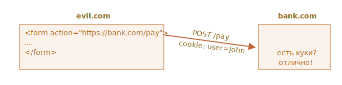
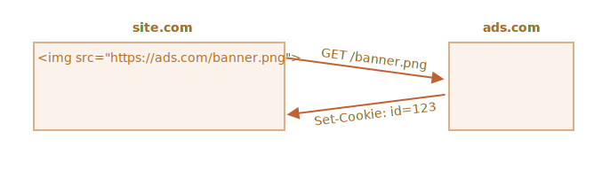

Куки - это небольшие строки данных, которые хранятся непосредственно в браузере. Они являются частью
HTTP-протокола, определенного в спецификации RFC 6265.
Куки обычно устанавливаются веб-сервером при помощи заголовка Set-Cookie. Затем браузер
будет автоматически добавлять их в (почти) каждый запрос на тот же домен при помощи заголовка Cookie.
Один из наиболее частых случаев использования куки - это аутентификация:
При входе на сайт сервер отсылает в ответ HTTP-заголовок Set-Cookie для того, чтобы
установить куки со специальным уникальным идентификатором сессии («session identifier»).
Во время следующего запроса к этому же домену браузер посылает на сервер HTTP-заголовок
Cookie.
Таким образом, сервер понимает, кто сделал запрос.
Мы также можем получить доступ к куки непосредственно из браузера, используя свойство document.cookie.
Куки имеют множество особенностей и тонкостей в использовании, и в этой главе мы подробно с ними разберемся.
Чтение из document.cookie
Хранит ли ваш браузер какие-то куки с этого сайта? Посмотрим:
// На javascript.info мы используем сервис Google Analytics для сбора статистики,
// поэтому какие-то куки должны быть
alert(document.cookie); // cookie1=value1; cookie2=value2; ...
Значение document.cookie состоит из пар ключ=значение, разделенных
;. Каждая пара представляет собой отдельное куки.
Чтобы найти определенное куки, достаточно разбить строку из document.cookie по ;,
и затем найти нужный ключ. Для этого мы можем использовать как регулярные выражения, так и функции для
обработки массивов.
Запись в document.cookie
Мы можем писать в document.cookie. Но это не просто свойство данных, а
аксессор (геттер/сеттер).
Присваивание к нему обрабатывается особым образом.
Запись в document.cookie обновит только упомянутые в ней куки, но при этом не затронет
все остальные.
Например, этот вызов установит куки с именем user и значением John:
document.cookie = 'user=John'; // Обновляем только куки с именем 'user'
alert(document.cookie); // Показываем все куки
Если вы запустите этот код, то, скорее всего, увидите множество куки. Это происходит, потому что
операция document.cookie= перезапишет не все куки, а лишь куки с вышеупомянутым именем
user.
Технически, и имя и значение куки могут состоять из любых символов, для правильного форматирования
следует использовать встроенную функцию encodeURIComponent:
// Специальные символы (пробелы), требуется кодирование
let name = 'my name';
let value = 'John Smith';
// Кодирует в my%20name=John%20Smith
document.cookie = encodeURIComponent(name) + '=' + encodeURIComponent(value);
alert(document.cookie); // ...; my%20name=John%20Smith
Ограничения
Существует несколько ограничений:
После encodeURIComponent пара name=value не должна занимать более
4Кб. Таким образом, мы не можем хранить в куки большие данные.
Общее количество куки на один домен ограничивается примерно 20+. Точное ограничение зависит
от конкретного браузера.
У куки есть ряд настроек, многие из которых важны и должны быть установлены.
Эти настройки указываются после пары ключ=значение и отделены друг от друга разделением
; вот так:
document.cookie = 'user=John; path=/; expires=Tue, 19 Jan 2038 03:14:07 GMT';
path
path=/mypath
URL-префикс пути, куки будут доступны для страниц под этим путем. Должен быть абсолютным. По умолчанию
используется текущий путь.
Если куки установлено с path=/admin, то оно будет доступно на страницах /admin
и /admin/something, но не на страницах /home или /adminpage.
Как правило, указывают в качестве пути корень path=/, чтобы наше куки было доступно на всех
страницах сайта.
domain
domain=site.com
Домен определяет, где доступен файл куки. Однако на практике существуют определенные ограничения.
Мы не можем указать здесь какой угодно домен.
Нет никакого способа разрешить доступ к файлам куки из другого домена 2-го уровня, поэтому
other.com никогда не получит куки, установленные по адресу site.com.
Это ограничение безопасности, позволяющее нам хранить конфиденциальные данные в файлах куки, которые должны
быть доступны только на этом сайте.
По умолчанию куки доступны лишь тому домену, который его установил.
Пожалуйста, обратите внимание, что по умолчанию файл куки также не передается поддомену, например,
forum.site.com.
// Если мы установим файл куки на веб-сайте site.com...
document.cookie = 'user=John';
// ... Мы не увидим его на forum.site.com
alert(document.cookie); // нет user
... Но это можно изменить. Если мы хотим разрешить поддомен типа forum.site.com получать куки,
установленные на site.com, это возможно.
Чтобы это произошло, при установке файла куки в site.com, мы должны явно установить параметр
domain для корневого домена: domain=site.com. После этого все поддомены увидят такой
файл cookie.
Например:
// Находясь на странице site.com
// сделаем куки доступным для всех поддоменов *.site.com:
document.cookie = 'user=John; domain=site.com';
// Позже
// На forum.site.com
alert(document.cookie); // есть куки user=John
По историческим причинам установка domain=.site.com (с точкой перед site.com) также
работает и разрешает доступ к куки для поддоменов. Это старая запись, но можно использовать и ее, если нужно,
чтобы поддерживались очень старые браузеры.
Таким образом, опция domain позволяет нам разрешить доступ к куки для поддоменов.
expires, max-age
По умолчанию, если куки не имеют ни одного из этих параметров, то они удаляются при закрытии браузера.
Такие куки называются сессионными («session cookies»).
Чтобы помочь куки «пережить» закрытие браузера, мы можем установить значение опций expires
или max-age.
expires=Tue, 19 Jan 2038 03:14:07 GMT
Дата истечения срока действия куки, когда браузер удалит его автоматически.
Дата должна быть точно в этом формате, во временной зоне GMT. Мы можем использовать data.toUTCString,
чтобы получить правильную дату. Например, мы можем установить срок действия куки на 1 день.
// +1 день от текущей даты
let date = new Date(Date.now + 86400e3);
date = date.toUTCString();
document.cookie = 'user=John; expires=' + date;
Если мы установим в expires прошедшую дату, то куки будет удалено.
max-age=3600
Альтернатива expires, определяет срок действия куки в секундах с текущего момента.
Если задан ноль или отрицательное значение, то куки будет удалено:
// Куки будет удалено через 1 час
document.cookie = 'user=John; max-age=3600';
// Удалим куки (срок действия истекает прямо сейчас)
document.cookie = 'user=John; max-age=0';
secure
secure
Куки следует передавать только по HTTPS-протоколу.
По умолчанию куки, установленные сайтом http://site.com, также будут доступны на сайте
https://site.com и наоборот.
То есть, куки, по умолчанию, опираются на доменное имя, они не обращают внимания на протоколы.
С этой настройкой, если куки будет установлено на сайте https://site.com, то оно не будет
доступно на том же сайте с протоколом HTTP, как http://site.com. Таким образом, если в куки
хранится конфиденциальная информация, которую не следует передавать по незашифрованному протоколу HTTP,
то нужно установить этот флаг.
// Предполагается, что сейчас мы на https://
// Установим опцию secure для куки (куки доступно только через HTTPS)
document.cookie = 'user=John; secure';
samesite
Это еще одна настройка безопасности, применяется для защиты от так называемой XSRF-атаки
(межсайтовая подделка запроса).
Чтобы понять, как настройка работает и где может быть полезной, посмотрим на XSRF-атаки.
Атака XSRF
Представьте, что вы авторизовались на сайте bank.com. То есть: у вас есть куки для аутентификации
с этого сайта. Ваш браузер отправляет его на bank.com с каждым запросом, чтобы сервер этого
сайта узнавал вас и выполнял все конфиденциальные финансовые операции.
Теперь, просматривая веб-страницу в другом окне, вы случайно переходите на сайт evil.com,
который автоматически отправляет форму <form action="https://bank.com/pay">
на сайт bank.com с заполненными полями, которые инициируют транзакцию на счет хакера.
Браузер посылает куки при каждом посещении bank.com, даже если форма была отправлена
с evil.com. Таким образом, банк узнает вас и выполнит платеж.

Такая атака называется межсайтовая подделка запроса (или Cross-Site Request Forgery, XSRF).
Конечно же, в реальной жизни банки защищены от такой атаки. Во всех сгенерированных сайтом
bank.com формах есть специальное поле, так называемый «токен защиты от XSRF», который
вредоносная страница не может ни сгенерировать, ни каким-либо образом извлечь из удаленной страницы
(она может отправить форму туда, но не может получить данные обратно). И сайт bank.com
при получении формы проверяет его наличие.
Но такая защита требует усилий на ее реализацию: нам нужно убедиться, что в каждой форме есть поле
с токеном, также мы должны проверить все запросы.
Настройка samesite
Параметр куки samesite предоставляет еще один способ защиты от таких атак, который (теоретически)
не должен требовать «токенов защиты XSRF».
У него есть два возможных значения:
samesite=strict(или, что то же самое, samesite)
Куки с samesite=strict никогда не отправятся, если пользователь пришел не с этого же сайта.
Другими словами, если пользователь переходит по ссылке из почты, отправляет форму с evil.com
или выполняет любую другую операцию, происходящую с другого домена, то куки не отправятся.
Если куки имеют настройку samesite, то атака XSRF не имеет шансов на успех, потому что
отправка с сайта evil.com происходит без куки. Таким образом, сайт bank.com
не распознает пользователя и не произведет платеж.
Защита довольно надежная. Куки с настройкой samesite будет отправлено только в том случае,
если операции происходят с сайта bank.com, например, отправка формы сделана со страницы
на bank.com.
Хотя есть небольшие неудобства.
Когда пользователь перейдет по ссылке на bank.com, например, из своих заметок, то будет
удивлен, что сайт bank.com не узнал его. Действительно, куки с samesite=strict
в этом случае не отправляется.
Мы могли бы обойти это ограничение, используя два куки: одно куки для «общего узнавания», только для того,
чтобы поздороваться: «Привет, Джон», и другое куки для операций изменения данных с samesite=strict.
Тогда пользователь, пришедший на сайт, увидит приветствие, но платежи нужно инициировать с сайта банка,
чтобы отправилось второе куки.
samesite=lax
Это более мягкий вариант, который также защищает от XSRF и при этом не портит впечатление от использования
сайта.
Режим lax так же, как и strict, запрещает браузеру отправлять куки, когда запрос
происходит не с сайта, но добавляет одно исключение.
Куки с samesite=lax отправляется, если два этих условия верны:
Используются безопасные HTTP-методы (например GET, но не POST).
Полный список безопасных HTTP-методов можно посмотреть в спецификации
RFC7231.
По сути, безопасными считаются методы, которые обычно используются для чтения, но не для записи данных.
Оно не должно выполнять никаких операций на изменение данных. Переход по ссылке является всегда
GET-методом, то есть безопасным.
Операция осуществляет навигацию верхнего уровня (изменяет URL в адресной строке браузера).
Обычно это так, но если навигация выполняется в <iframe>, то это не верхний уровень.
Кроме того, JavaScript-методы для сетевых запросов не выполняют никакой навигации, поэтому они не
подходят.
Таким образом, режим samesite=lax позволяет самой распространенной операции «переход по ссылке»
передавать куки. Например, открытие сайта из заметок удовлетворяет этим условиям.
Но что-то более сложное, например, сетевой запрос с другого сайта или отправка формы, теряет куки.
Если это вам подходит, то добавление samesite=lax, скорее всего, не испортит впечатление
пользователей от работы с сайтом и добавит защиту.
В целом, samesite отличная настройка.
Но у нее есть важные недостаток:
samesite игнорируется (не поддерживается) старыми браузерами, выпущенными до 2017 года
и ранее.
Так что, если мы будем полагаться исключительно на samesite, то старые браузеры будут
уязвимы.
Но мы, безусловно, можем использовать samesite вместе с другими методами защиты, такими как
XSRF-токены, чтобы добавить дополнительный слой защиты, а затем, в будущем, когда старые браузеры полностью
исчезнут, мы, вероятно, сможем полностью удалить XSRF-токены.
httpOnly
Эта настройка не имеет ничего общего с JavaScript, но мы должны упомянуть ее для полноты изложения.
Веб-сервер использует заголовок Set-Cookie для установки куки. И он может установить настройку
httpOnly.
Эта настройка запрещает любой доступ к куки из JavaScript. Мы не можем увидеть такое куки или манипулировать
им с помощью document.cookie.
Эта настройка используется в качестве меры предосторожности от определенных атак, когда хакер внедряет
свой собственный JavaScript-код в страницу и ждет, когда пользователь посетит ее. Это вообще не должно
быть возможным, хакер не должен быть в состоянии внедрить свой код на ваш сайт, но могут быть ошибки,
которые позволят хакеру сделать это.
Обычно, если такое происходит, и пользователь заходит на страницу с JavaScript-кодом хакера, то этот код
выполняется и получает доступ к document.cookie, и тем самым к куки пользователя, которые содержат
аутентификационную информацию. Это плохо.
Но если куки имеет настройку httpOnly, то document.cookie не видит его, поэтому
такое куки защищено.
Приложение: Функции для работы с куки
Вот небольшой набор функций для работы с куки, более удобных, чем ручная модификация document.cookie.
Для этого существует множество библиотек, так что они, скорее, в демонстрационных целях. Но при этом
полностью рабочие.
getCookie(name)
Самый который способ получить доступ к куки - это использовать
регулярные выражения.
Функция getCookie(name) возвращает куки с указанным name:
// Возвращает куки с указанным name,
// или undefined, если ничего не найдено
function getCookie(name) {
let matches = document.cookie.match(new RegExp(
"(?:^|; )" + name.replace(/([\.$?*|{}\(\)\[\]\\\/\+^])/g, '\\$1') + "=([^;]*)"
));
return matches ? decodeURIComponent(matches[1]) : undefined;
}
Здесь new RegExp генерируется динамически, чтобы находить ; name=<value>.
Обратите внимание, значение куки кодируется, поэтому getCookie использует внутреннюю
функцию decodeURIComponent для декодирования.
setCookie(name, value, options)
Устанавливает куки с именем name и значением value, с настройкой
path=/ по умолчанию можно изменить, чтобы добавить другие значения по умолчанию):
function setCookie(name, value, options = {}) {
options = {
path: '/',
// При необходимости добавьте другие значения по умолчанию
...options
};
if (options.expires instanceof Date) {
options.expires = options.expires.toUTCString();
}
let updatedCookie = encodeURIComponent(name) + '=' + encodeURIComponent(value);
for (let optionKey in options) {
updatedCookie += '; ' + optionKey;
let optionValue = option[optionKey];
if (optionValue !== true)
updatedCookie += '=' + optionValue;
}
}
document.cookie = updatedCookie;
}
// Пример использования:
setCookie('user', 'John', {secure: true, 'max-age': 3600});
deleteCookie(name)
Чтобы удалить куки, мы можем установить отрицательную дату истечения срока действия:
function deleteCookie(name) {
setCookie(name, '', {max-age: -1});
}
Операции обновления или удаления куки должны использовать те же пути и домен
Обратите внимание: когда мы обновляем или удаляем куки, нам следует использовать только
такие же настройки пути и домена, как при установке куки.
Куки называются сторонними, если они размещены с домена, отличающегося от страницы, которую посещает пользователь.
Например:
Страница site.com загружает баннер с другого сайта:
<img src="https://ads.com/banner.png">.
Вместе с баннером удаленный сервер ads.com может установить заголовок Set-Cookie
с куки, например, id=123. Такие куки создаются с домена ads.com и будут
видны только на сайте ads.com:

В следующий раз при доступе к ads.com удаленный сервер получит куки id
и распознает пользователя:
Что еще более важно, когда пользователь переходит с site.com на другой сайт
other.com, на котором тоже есть баннер, то ads.com получит куки, так как
они принадлежат ads.com, таким образом ads.com распознает пользователя
и может отслеживать его перемещение между сайтами:
Сторонние куки в силу своей специфики обычно используются для целей отслеживания посещаемых пользователем
страниц и показа рекламы. Они привязаны к исходному домену, поэтому ads.com может отслеживать
одного и того же пользователя на разных сайтах, если оттуда идет обращение к нему.
Естественно, некоторым пользователям не нравится, когда их отслеживают, поэтому браузеры позволяют отключать
такие куки.
Кроме того, некоторые современные браузеры используют специальные политики для таких куки:
Safari вообще не разрешает сторонние куки.
У Firefox есть «черный список» сторонних доменов, чьи сторонние куки он блокирует.
На заметку:
Если мы загружаем скрипт со стороннего домена, например
<script src="https://google-analytics.com/analytics.js">, и этот скрипт использует
document.cookie, чтобы установить куки, то такие куки не являются сторонними.
Если скрипт устанавливает куки, то нет разницы откуда был загружен скрипт - куки принадлежит
домену текущей веб-страницы.
Приложение: GDPR
Эта тема вообще не связана с JavaScript, но следует ее иметь в виду при установке куки.
В Европе существует законодательство под названием GDPR, которое устанавливает для сайтов ряд правил,
обеспечивающих конфиденциальность пользователей. И одним из таких правил является требование явного
разрешения от пользователя на использование отслеживающих куки.
Обратите внимание, это относится только к куки, используемых для отслеживания/идентификации/авторизации.
То есть, если мы установим куки, которые просто сохраняют некоторую информацию, но не отслеживают
и не идентифицируют пользователя, то мы свободны от этого правила.
Но если мы собираемся установить куки с информацией об аутентификации или с идентификатором отслеживания,
то пользователь должен явно разрешить это.
Есть два основных варианта как сайты следуют GDPR. Вы наверняка уже видели их в сети:
Если сайт хочет установить куки для отслеживания только для авторизованных пользователей.
То в регистрационной форме должен быть установлен флажок «принять политику конфиденциальности»
(которая определяет, как используются куки), пользователь должен установить его, и только тогда
сайт сможет использовать авторизационные куки.
Если сайт хочет установить куки для отслеживания всем пользователям.
Чтобы сделать это законно, сайт показывает модальное окно для пользователей, которые зашли в первый
раз, и требуют от них согласие на использование куки. Затем сайт может установить такие куки
и показать пользователю содержимое страницы. Хотя это создает неудобства для новых посетителей -
никому не нравится наблюдать модальные окна вместо контента. Но GDPR в данной ситуации требует
явного согласия пользователя.
GDPR касается не только куки, но и других вопросов, связанных с конфиденциальностью, которые выходят за рамки
материала этой главы.
Итого
document.cookie предоставляет доступ к куки.
Операция записи изменяет только то куки, которое было указано.
Имя и значение куки должны быть закодированы.
Одно куки вмещает до 4Kb данных, разрешается более 20 куки на сайт (зависит от браузера).
Настройки куки:
path=/, по умолчанию устанавливается текущий путь, делает куки видимым только
по указанному пути и ниже.
domain=site.com, по умолчанию куки видны только на текущем домене, если явно указан
домен, то куки видны и на поддоменах.
expires или max-age устанавливает дату истечения срока действия, без них
куки умрет при закрытии браузера.
secure делает куки доступными только при использовании HTTPS.
samesite запрещает браузеру отправлять куки с запросами, поступающими извне,
помогает предотвратить XSRF-атаки.
Дополнительно:
Сторонние куки могут быть запрещены браузером, например Safari делает это по умолчанию.
Установка отслеживающих куки пользователям из стран ЕС требует их явного согласия на это в
соответствии с законодательством GDPR.